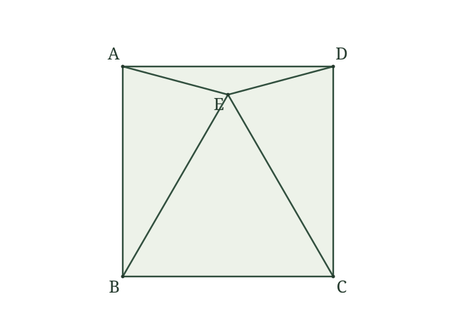
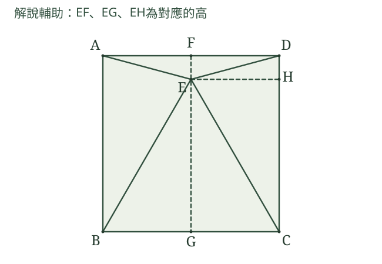
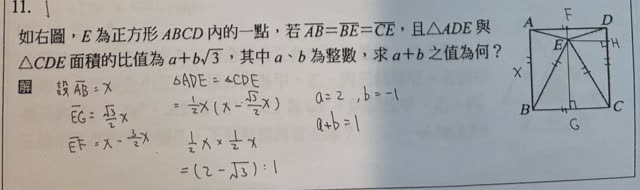

分享原卷｜第11題
完整原題

如右圖，E為正方形ABCD內的一點，若AB＝BE＝CE，且△ADE與△CDE面積的比值為a＋b√3，其中a、b為整數，求a＋b之值為何？
先想一想，再查看答案、解說與原圖
原卷作答：1
答案：1（a＝2、b＝−1）。
詳細說明與解題步驟
一、發現正三角形並設定方便的邊長
正方形有AB＝BC，已知AB＝BE＝CE，故△BCE三邊相等，是正三角形。面積比不隨整個圖形等比例縮放改變，為方便計算，不妨設正方形邊長為2。
二、求E到各底邊的距離
從E向BC作垂線，垂足為G，正三角形的高同時平分底邊，所以BG＝GC＝1。
在直角△BEG中，EG＝√(BE²−BG²)＝√(2²−1²)＝√3。
從E向AD、CD分別作垂線，垂足為F、H。正方形高2，所以EF＝2−√3；E位於BC中點的垂線上，因此EH＝1。
三、求兩三角形面積
△ADE以AD＝2為底、高EF＝2−√3，面積＝(1／2)×2×(2−√3)＝2−√3。
△CDE以CD＝2為底、高EH＝1，面積＝(1／2)×2×1＝1。
四、將比值對照a＋b√3
△ADE面積／△CDE面積＝2−√3＝2＋(−1)√3，故a＝2、b＝−1，a＋b＝1。題目問比值，不是把2−√3與1相加。

核對註記：已依原卷或完整文字核對並獨立解題；對應教材課次未確認，歸綜合。
原圖（僅本題）
